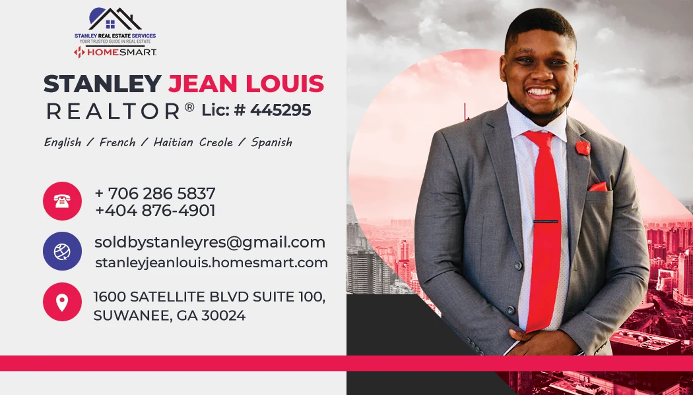

PROJET / COMMUNICATION IMMOBILIÈRE
SJL.
Une présence,
deux supports.
Une carte de visite et une carte promotionnelle pour Stanley Jean Louis. Deux formats pour présenter son activité immobilière, autour du portrait et d’une palette rouge, blanche et grise.
STRUCTUREStanley Jean Louis
MON RÔLEConception graphique
LES RÉALISATIONS
Le même visage.
Deux façons de se présenter.
Sélectionnez un visuel pour l’agrandir.

Le portrait occupe une moitié du support. Les informations et les pictogrammes sont regroupés de l’autre côté, avec des accents rouges qui reprennent la cravate.